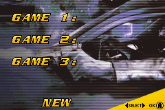

Driv3r (USA)
EEPROM 4K Save Format Spec gbakit Built-In 💾 MultiBoot
Cartridge Identity
- Game Code
B3RE(FamilyB3R)- Header Title
DRIVER3- Maker / Revision
70/ rev0- ROM Size
- 8.0 MiB (8,388,608 B)
- Save Media
EEPROM 4K- SHA-256
86dbaa89aaaad0aebf3c6d2a8d0f5f722905139ed43423d3bc5aa349fc9445e5- Engine / SDK Group
comm-003(128 families)
Screenshots

Link Cable & Multiplayer Communications
This title contains detected communication capabilities: 💾 MultiBoot.
Detailed protocol specifications, SIO registers, Joybus commands, and MultiBoot sequences are documented in the Link & Multiplayer Reference.
- Single-Cart MultiBoot
- Single-Cartridge MultiBoot (Download Play) client/server handler · Thumb SWI 0x25 (
0xDF25):0x1a35f2,0x1e4d6c,0x26a20c,0x277152
Battery Save Format Specification
Open Full Save Format SpecDownload Sample .sav (512 B)Download save-format.json
- Specification Coverage
- 8 mapped fields · 1 verified checksum(s) · Confidence: MEDIUM
- gbakit Built-In Support
- Built-in (B3RE)
- Emulator Verification
- Checksum enforced: No · Repaired save accepted: Yes
gbakit save verify B3RE save.sav
gbakit save decode B3RE save.sav
gbakit save fix B3RE damaged.sav -o repaired.savROM Assets, Compression & Audio
- BIOS Compression
- LZ77 (
0x10): 1 streams · RLE (0x30): 0 streams - ROM Pointer Tables
- 150 tables (0 pointing to validated compressed streams)
- SDK Backup Tags
EEPROM_V124
Text, Fonts & Scene Data
- Primary Text Encoding
- Compressed / custom-encoded text (
1ASCII strings ·1Shift-JIS runs) - Font & VWF Indicators
- VWF Width Table 1bpp Font · BIOS SWIs: BitUnPack
0x10:4· LZ770x11/12:4· Huffman0x13:3· RLE0x14/15:8 - Scene & Packaging
57ROM pointer tables (≥32 entries,10≥200) ·34relativeu32TOCs ·166OAM metasprite hits · FourCC:GBAMOD30PACK
Hardware MMIO Subsystems
dma_transfer0x87e4170ppu_display0x825b934,0x87d8a50
Regional Variants & Revisions (Family B3R)
- Driv3r (Europe) (En,Fr,De,Es,It) (
B3RP, 8 MiB)